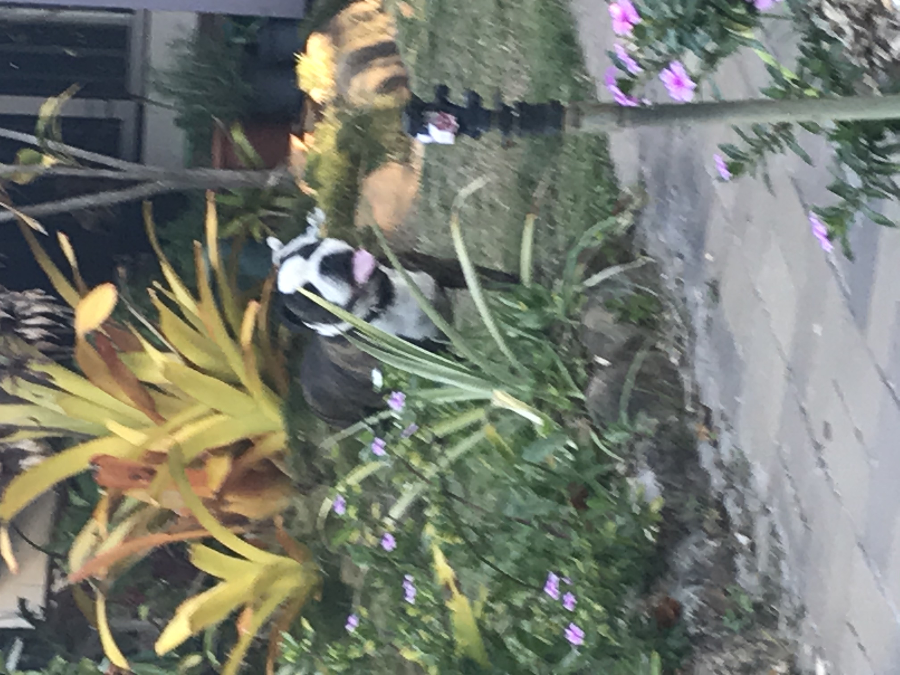

Wow such wow! This will Probably be my favourite page to edit! Here's my pets that I can remember
Life: 2013-2022
Ownership: 2014-2022
He was the best boy anyone could as for, and don't mind my french but he was a putain de super chien. His death hit me the hardest, I have never cried so much before and I haven't since.
